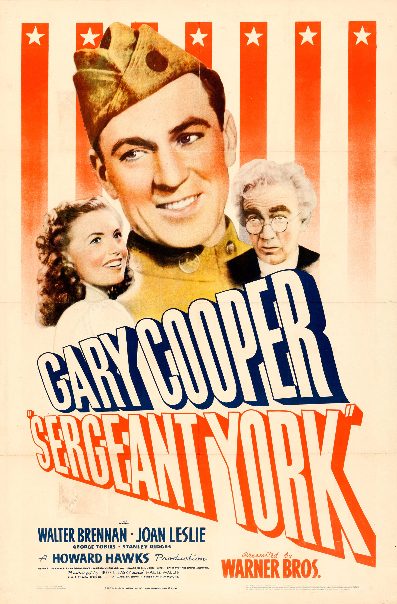

Sergeant York
14th Academy Awards
(Oscars 1942)
11 Nominations, 2 Awards
| Nominations | ||
|---|---|---|
| Category | Nominees | Result |
| Outstanding Motion Picture | Warner Bros. | Nominated |
| Actor | Gary Cooper | Won |
| Actor in a Supporting Role | Walter Brennan | Nominated |
| Actress in a Supporting Role | Margaret Wycherly | Nominated |
| Directing | Howard Hawks | Nominated |
| Writing (Original Screenplay) | Abem Finkel, Harry Chandlee, Howard Koch, and John Huston | Nominated |
| Cinematography (Black-and-White) | Sol Polito | Nominated |
| Film Editing | William Holmes | Won |
| Art Direction (Black-and-White) | Fred MacLean and John Hughes | Nominated |
| Sound Recording | Nathan Levinson | Nominated |
| Music (Music Score of a Dramatic Picture) | Max Steiner | Nominated |